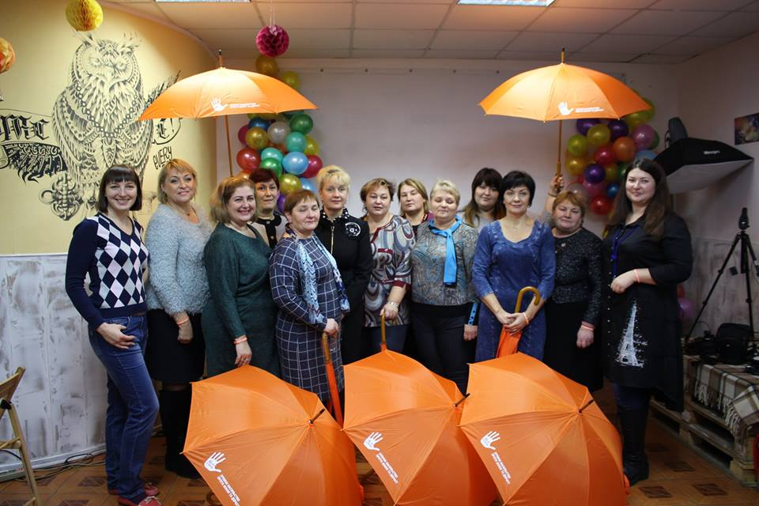
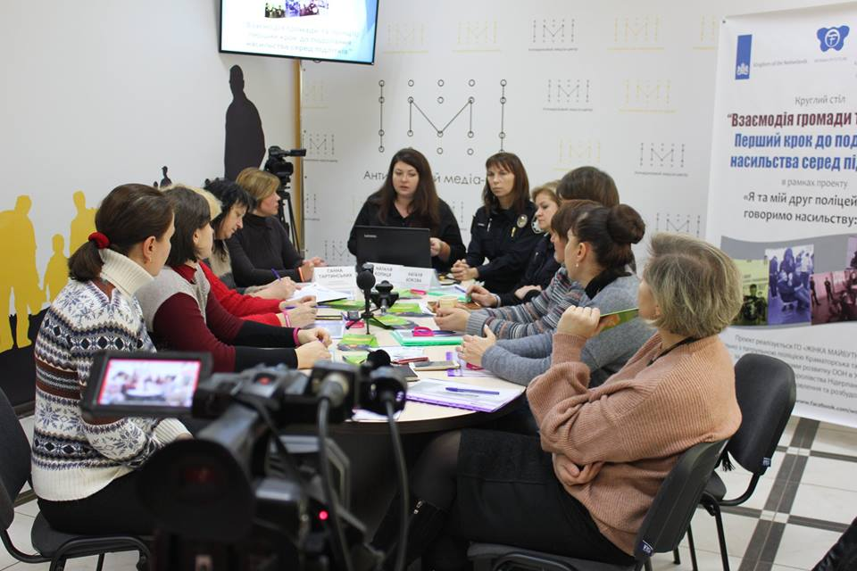

ПРО Громадську організацію "Жінка майбутнього"

ГО «ЖІНКА МАЙБУТНЬОГО» – неприбуткова громадська організація, заснована 2013 році. На даному етапі розвитку організації працюємо у Запорізькій області м. Бердянськ та Бердянський район та Донецькій області м. Краматорськ. Свою діяльність розпочали наприкінці 2016 року. Ми надаємо інформаційно- просвітницькі послуги населенню та психологічну допомогу жінкам і дітям, які опинились у складних життєвих обставинах. ГО «ЖІНКА МАЙБУТНЬОГО» є членом коаліції «Запоріжжя 1325», яка впроваджує Національний план дій 1325 на регіональному рівні. Також з ініціативи нашої Організації створена робоча група «Єдність заради безпеки жінок Приазов’я» на Бердянщині, діяльність якої направлена на попередження гендерно-обумовленого і домашнього насильства або булінгу, зниження толерантного ставлення до насильства та дискримінації в цілому.
ЦІЛІ ФОНДУ
Просування людських прав та основних свобод громадян через підвищення обізнаності населення України; Запобігання ґендерно-обумовленому та домашньому насильству по відношенню до жінок і дітей; Посилення соціально-психологічної підтримки жінок та дітей у кризових ситуаціях; Посилення консолідації жіночого руху як невід'ємної частини громадянського суспільства України; Посилення участі громадськості в процесах прийняття рішень на різних рівнях; Посилення уваги громадськості до питань різноманітності та ґендеру. Конец переписки Введите сообщение...
МІСІЯ Громадської організації "Жінка майбутнього"
Ми прагнемо допомогти ОГС, зокрема жіночим, відігравати активну роль у процесах розбудови демократичного суспільства, яке забезпечує рівність, справедливість та реалізацію людських прав шляхом підтримки громадянського суспільства через надання фінансових можливостей.